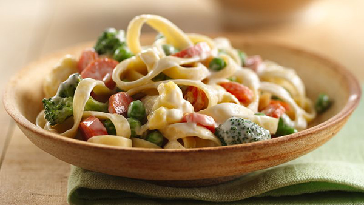

Artie Bucco's Special Fettuccine Primavera

Vesuvio's best menu!
It's creamy! It's healthy!
It's something you should try!
Ingredients
- 4 tablespoons unsalted butter
- 1 small onion, finely copped
- 2 medium carrots, peeled and finely diced
- 1 cup broccoli florets (cut into 3/4-inch pieces)
- 1 cup asparagus tips
- 1/2 cup fresh or frozen peas
- 1 cup heavy cream
- Salt and heavy ground pepper
- 10 basil leaves, stacked and cut into thin ribbons
- 1 pound fresh fettuccine
- 3/4 cup freshly grated Parmigiano-Reggiano
Steps
- Bring at least 4 quarts of water to a boil in a large pot. Add salt to taste. Add the broccoli and
asparagus and cook for 1 minute.
With a small sieve, scoop out the vegetables and drain them
well. Leave the water boiling in the pot
- In a skillet large enough to hold the cooked fettuccine, melt the butter over medium heat. Add
the onion and carrots and cook,
stirring occasionally, for 5 minutes, or until softened.
- Add the broccoli and asparagus to the skillet, along with the peas and cream. Bring to a
simmer. Season to taste with salt and pepper. Stir in the basil and turn off the heat.
- Drop the fettuccine into the boiling water and cook, stirring frequently, until al dente, tender
yet still firm to the bite.
Drain the fettuccine and add it to the skillet. Add the cheese and toss
well. Serve immediately.
Back to home